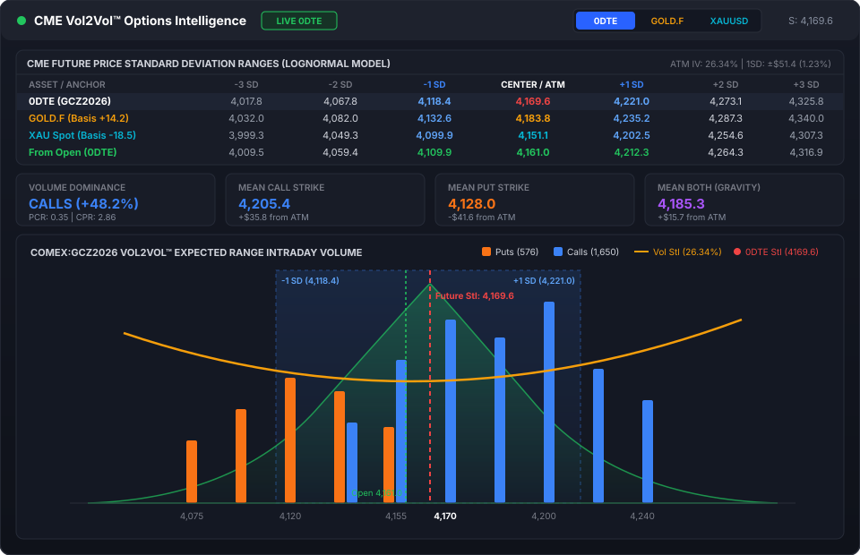
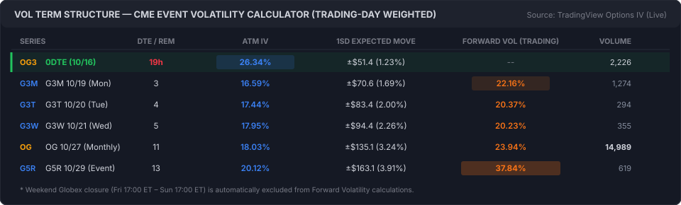
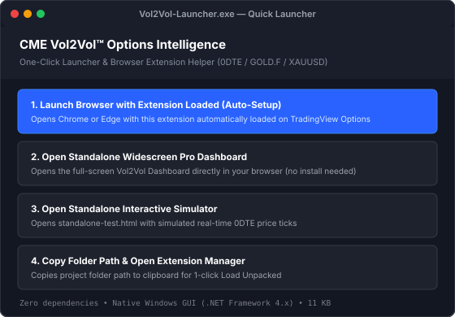

CME Vol2Vol™ Options Intelligence
Real-time CME QuikStrike-grade Options Volume, Implied Volatility Smile, Multi-Asset Standard Deviation Ranges (0DTE / GOLD.F / XAUUSD), and Event Volatility Term Structure for TradingView.

1. Multi-Asset Standard Deviation Ranges (-3σ to +3σ)
Computes risk-neutral lognormal expected move bands using the exact CME QuikStrike convention:
| Row | Reference Price / Anchor | Description |
|---|---|---|
| 1. 0DTE Active Contract | COMEX:GCV2026 / GCZ2026 |
Base standard deviation bands centered on the active delivery futures contract underlying the 0DTE options series. |
| 2. GOLD.F Futures | BLACKBULL:GOLD.F |
Automatically converts 0DTE SD bands via live basis spread: Basis = GOLD.F − 0DTE_Price. |
| 3. XAU Spot CFD | OANDA:XAUUSD |
Automatically converts 0DTE SD bands to Spot Gold via live basis spread: Basis = XAUUSD − 0DTE_Price. |
| 4. From Session Open | 5:00 AM ICT / 18:00 ET Globex Open | Anchors SD bands to the true daily session open (after the 3:00–5:00 AM maintenance break, not Previous Settlement) and shifts dynamically with the selected perspective (0DTE, GOLD.F, or XAUUSD). |
2. CME Event Volatility Calculator / Vol Term Structure
Because TradingView's voi-lens endpoint provides volume only, this extension queries TradingView's live Options Scanner API (scanner.tradingview.com/options/scan) in the background to retrieve real per-strike Implied Volatility across upcoming expirations.

Series ATM IV & 1SD Move
Each series' ATM IV is linearly interpolated at its own underlying futures price (F), with exact time-to-expiration (T) resolved to 16:59:59 America/New_York (automatic EDT/EST handling).
Trading-Day Weighted Forward Vol
Automatically subtracts the 48-hour CME Globex weekend closure (Friday 17:00 ET to Sunday 17:00 ET) so Friday-to-Monday Forward Volatility reflects true trading-day variance without weekend dilution.
3. Volume Dominance & Volume-Weighted Mean Strikes
Call / Put Dominance
Measures net Call vs. Put volume share, Put/Call Ratio (PCR = PutVol / CallVol), and Call/Put Ratio (CPR = CallVol / PutVol).
Mean Call / Mean Put / Mean Both
Computes volume-weighted center-of-gravity strikes:
Mean Call = Σ(K·Vc)/ΣVc,
Mean Put = Σ(K·Vp)/ΣVp, and
Mean Both = Σ(K·V)/ΣV.
4. One-Click Windows Launcher (Vol2Vol-Launcher.exe)
For users who prefer a one-click desktop experience, double-click Vol2Vol-Launcher.exe in the project root folder:
